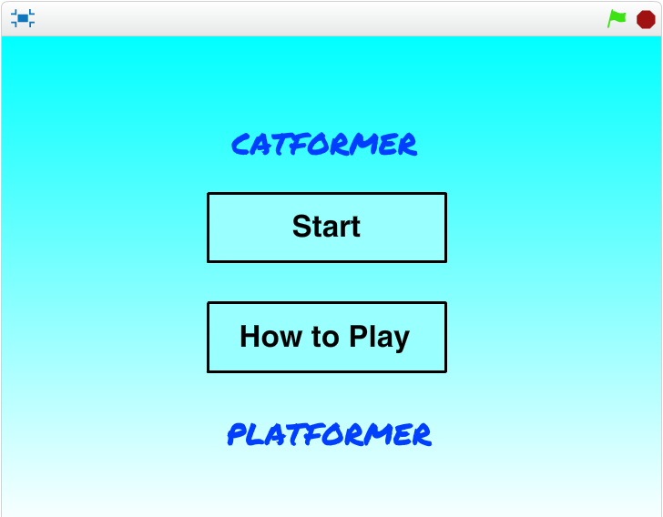
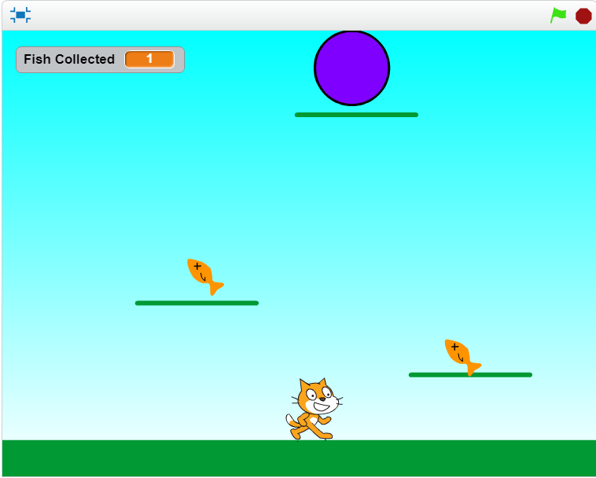
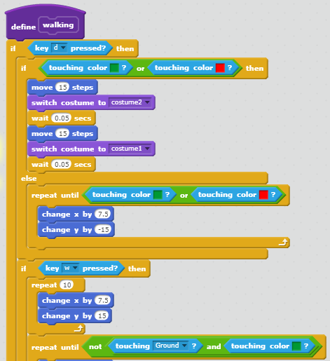
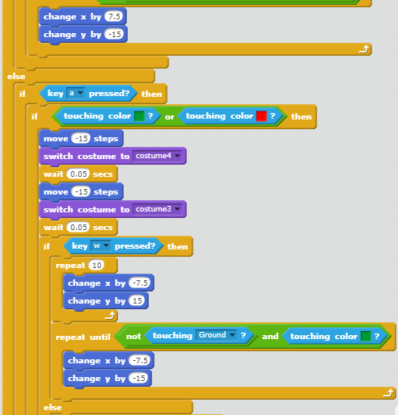
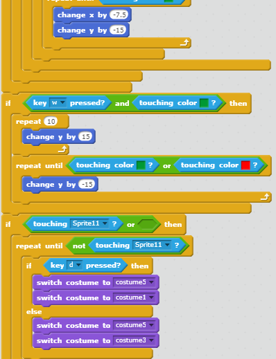

Catformer Platformer
Home Screen
 Description
The concept of the game was to make a simple platformer.
The scoring system was simple as well, the 'lives' were the fish you collected.
The use of randomness occurs in the location of the portal you need to go through to get to the next level, and every second it moves 5 units to the right, left, up, or down multiple times.
The game gets more difficult as you go through the five levels, each level adds more platforms in more challenging locations or more spikes which increase the chance of losing a life.
The game ends when you either pass level 5 or you lose all your lives.
Reflection
I created a simple platformer because I thought that platformers would be a reasonable thing for someone with very little experience creating a game to create so they would also have a challenge. The inspiration was probably mario, because when you think of a classic platformer you often think of the Super Mario Bros.
The two successful points in the development process of the game would have to be walking left and right, and having certain sprites appear during certain times. These were easy as all I had to do to move was have the sprite move ten units when the player pressed 'd' and negative ten when the player pressed 'a'. The appearance of different sprites was easy as they were all triggered by the broadcasts the other sprites were programmed to send out when they appeared or disappeared.
The two obstacle points in the development process would have to be landing on the platforms and jumping to the left and right. I overcame them with the help of Ms. Terry, we dedided to have the loop interrupted when the sprite touched a certain color. For the jump, we had the same loop repeat ten times every time the player pressed the 'w' key with either 'a' or 'd', giving the illusion that it's moving in a up and having gravity pulling it down.
If I had more time or resources, it would have tried to find a way to make the movements smoother and a permanant way to have the sprite stop falling through the ground every time the player moved on through the levels, as well of think of a better name for the game.
The algorithm that contributes the most to the game is the walking and jumping. It was the most difficult simply because it was so long and it was difficult to have the costume work with the movement of the sprite to make it seem as though it was actually running in the direction of the key the player pressed, the difficulty of the jumping was previously described in the obstacles.
It wasn't required for the reflection piece, but I felt like this belonged here and that I needed to say it. I'm really proud of my game. It's not the best game in the class, far from it actually, but I spent a lot of time on it and got it to work for the most part. I feel like I had learned so much more through the trial and error of trying to figure out how to make the game work. I started with near nothing regarding experience with creating an enjoyable game, but afterwards I learned how to make a simple, but passable platformer.
Main Algorithm

